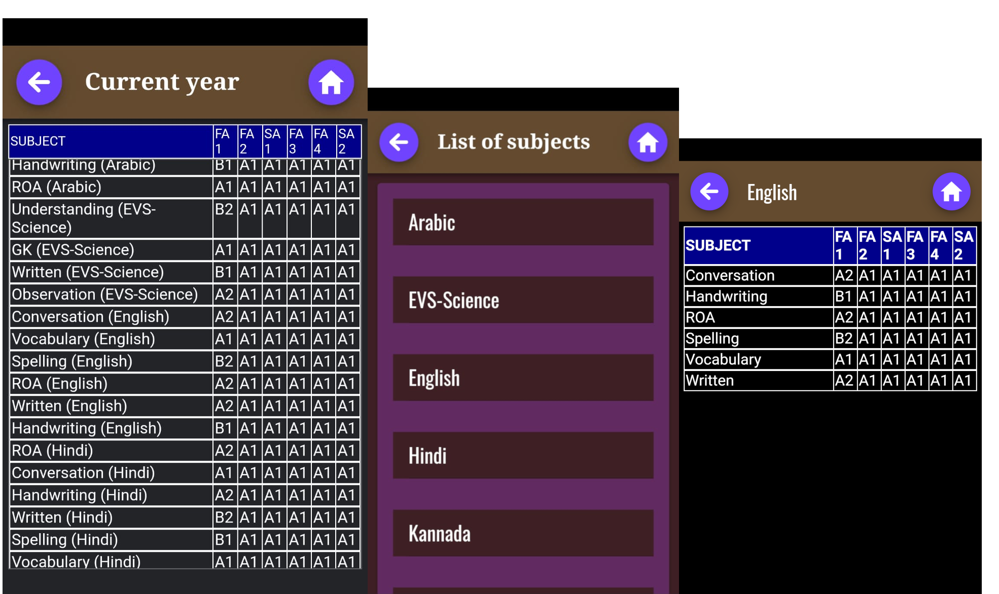
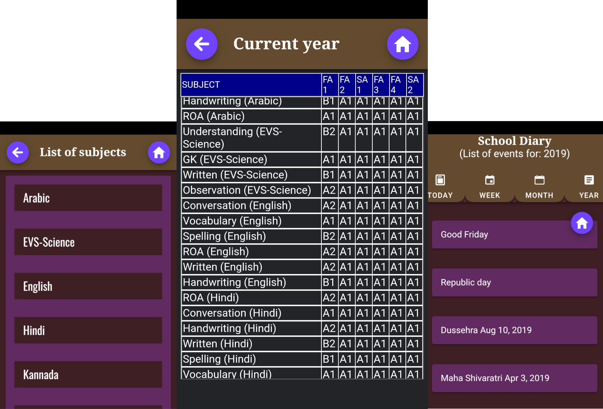

eStudent is a cloud based
web and mobile application for schools and students. Helping
parents/gaurdians monitor their children performance and get connected
with schools in real time.

With hand written or manual report card/marksheets, provision of any
kind of performance analysis report becomes impossible. We have several
analysis reports available in our reports modules
Bridges communication gap between parents & school
Provides state of the art tools/features to monitor kid's performance at
school

Planning an event or a short trip on long weekends?
- No need to contact school for information.
- No need to rigorously search paper diary for details.
Our digital School Diary module provide complete list of School
holidays.